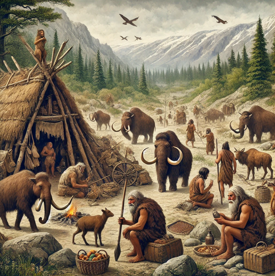
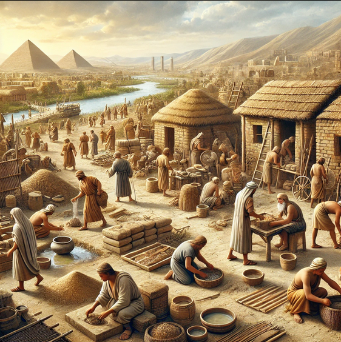
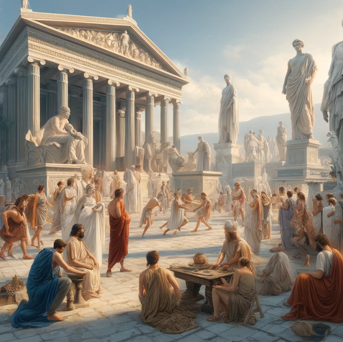
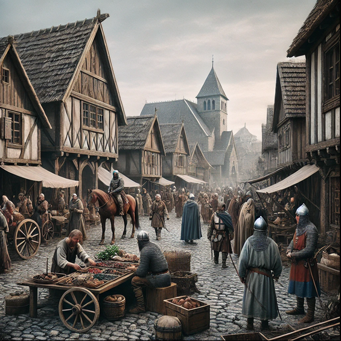

Periode Sejarah

Zaman Prasejarah
Zaman Prasejarah adalah periode sebelum adanya tulisan, ketika manusia menggunakan alat sederhana dan bergantung pada alam. Terbagi menjadi:
Zaman Batu
- Paleolitikum: Hidup nomaden, berburu, meramu.
- Mesolitikum: Semi-nomaden, alat lebih halus.
- Neolitikum: Bercocok tanam, menetap.
Zaman Perunggu
- Menggunakan logam perunggu untuk alat dan senjata.
Zaman Besi
- Mengolah besi, masyarakat lebih maju.

Peradaban Kuno
Mesir Kuno
- Lokasi:Sungai Nil
- Pencapaian:Piramida,Hieroglif,astronomi,dan firaun
Mesopotamia
- Lokasi:Tigris-Efrat (irak)
- Pencapaian:Tulisan kuneiform,Hukum hammurabi,irigasi
India Kuno
- Lokasi:Lembah indus
- Pencapaian:kota harappa,sistem kasta,veda
Cina Kuno
- Lokasi:Sungai Kuning
- Pencapaian:Kertas,Tembok Besar,Konfusianisme

Zaman Klasik
Yunani
- Demokrasi, filsafat (Socrates, Plato), seni (Parthenon), ilmu pengetahuan (Euclid).
Romawi
- Hukum Romawi, infrastruktur (jalan, aqueducts), seni (Koloseum), penyebaran Kristen.

Zaman Pertengahan
Perang Salib
- Peperangan antara Kristen Eropa dan Muslim untuk Yerusalem (1096-1291).
Kerajaan Eropa
- Pembentukan kerajaan seperti Inggris, Prancis, dan Spanyol.
Feodalisme
- Sistem sosial di mana tanah dibagikan oleh raja kepada bangsawan, yang memberi tanah kepada petani.

Renaissance dan Reformasi
Renaissance
- Kebangkitan seni, ilmu pengetahuan, dan budaya di Eropa (da Vinci, Galileo).
Reformasi
- Gerakan agama yang dipimpin Martin Luther, melawan Gereja Katolik, lahirnya Protestantisme.
Zaman Moderen
Revolusi Industri
- Perubahan besar dalam produksi dengan mesin dan pabrik, mengubah ekonomi dan sosial.
Perang Dunia
Perang Dunia I (1914-1918):- Konflik besar antara kekuatan eropa
- Perang Global Ynag Mengubah Geopolitik(Kingg Adolf Hitler)
Perkembangan Teknlogi
- Kemajuan di komputer, komunikasi, transportasi, dan medis, seperti internet dan ponsel.